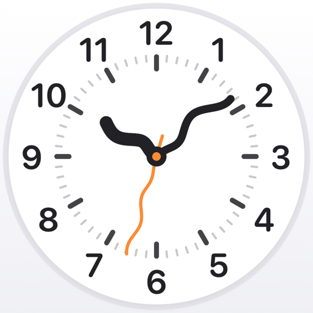

気まぐれアラーム
サポート / Support
日本語
気まぐれアラームは、決めた時間帯のどこかでランダムに鳴る、遊び心のあるiPhone用のアラームアプリです。鳴る時刻も、音も、鳴るかどうかさえも、毎回の抽選で決まります。休憩や気分転換のきっかけづくりにお使いください。iOS 26以降に対応しています。
お問い合わせ
ご質問、不具合のご報告、ご要望は、メールでお送りください。お使いのiPhoneの機種とiOSのバージョンを書き添えていただけると助かります。
大切なお知らせ
このアプリは、ランダムな時刻に鳴る、または鳴らないことがある、エンターテインメント性のあるアラームです。起床、服薬、仕事の開始など、大切な予定のお知らせには使わないでください。
よくある質問
アラームが鳴りませんでした。
設定した「鳴らない確率」によって、わざと鳴らないことがあります。結果はホームの「履歴」で確認できます。毎回鳴らしたいときは、鳴らない確率を0%にしてください。
アラームを登録できません。
アプリを閉じたあともiOSがアラームを鳴らすため、アラームの利用許可が必要です。最初に許可しなかった場合は、iPhoneの「設定」アプリ →「アプリ」→「気まぐれアラーム」で、アラームの利用を許可してください。
アプリを閉じても鳴りますか。
はい。アラームはiOSのアラーム機能に登録されるので、アプリを閉じていても鳴ります。
ウィジェットを使いたい。
ホーム画面の何もないところを長押しし、「編集」→「ウィジェットを追加」→「気まぐれアラーム」を選んでください。ボタンを押すだけで「約1時間後」などのアラームをセットできます。
Pro版を購入したのに、Proの機能が使えません。
ホームの下にある「ショップ」を開き、「購入を復元」をタップしてください。購入時と同じApple Accountでサインインしている必要があります。
無料で使える範囲は。
アラーム1件、保存できる設定1件、アラーム音3種類、鳴らない確率の段階的な設定、「約1時間後」のワンタップとウィジェットが無料です。Pro版（買い切り）で、同時に最大10件のアラーム、20件の設定の保存、24種類の音、1%単位の確率、4人のキャラクター、ほかの時間幅のワンタップ、履歴と統計が使えます。サブスクリプションではありません。
English
Kimagure Alarm is a playful iPhone alarm that rings at a random moment within the time window you choose. The time, the sound, and even whether it rings at all are decided by a fresh draw every time. Use it as a nudge for breaks and little changes of pace. Requires iOS 26 or later.
Contact
For questions, bug reports, or requests, please email us. It helps if you include your iPhone model and iOS version.
Important
This is an entertainment alarm that rings at a random time, or may not ring at all. Do not use it for waking up, medication, starting work, or anything important.
Frequently asked questions
My alarm didn't ring.
Depending on the skip chance you set, the alarm may skip on purpose. You can see the result in History on the home screen. To have it ring every time, set the skip chance to 0%.
I can't schedule an alarm.
The app needs permission to use alarms so that iOS can ring them after the app is closed. If you didn't allow it at first, open the Settings app → Apps → Kimagure Alarm and allow alarms.
Does it ring when the app is closed?
Yes. Alarms are registered with iOS, so they ring even when the app is closed.
How do I add the widget?
Touch and hold an empty area of the Home Screen, tap Edit → Add Widget, and choose Kimagure Alarm. One tap sets an alarm for "in about an hour" and more.
I bought Pro, but Pro features are still locked.
Open Shop at the bottom of the home screen and tap Restore Purchases. You need to be signed in with the same Apple Account you used to buy it.
What is free?
One alarm, one saved setting, three sounds, skip chance in steps, and the one-tap "in about an hour" alarm and widget are free. Pro, a one-time purchase, adds up to 10 alarms at once, 20 saved settings, 24 sounds, skip chance in 1% steps, four characters, other one-tap time windows, and history and stats. It is not a subscription.